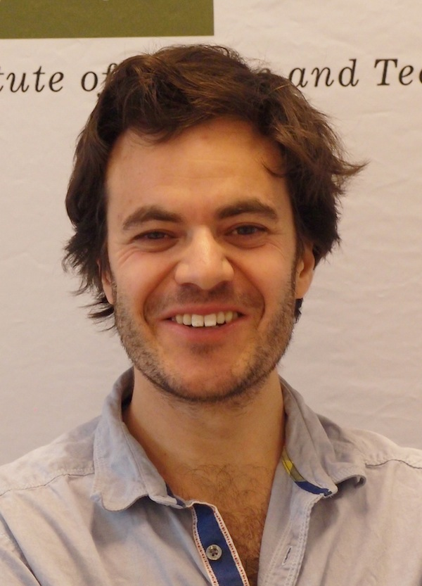

Research
My main interest is in Logic and Formal Methods for AI. In particular:
- Formal methods for multi-agent systems
- Logics for games and strategic reasoning, multiplayer games, imperfect information, incomplete information
- Foundations of synthesis and planning
- Automata theory
- Finite and algorithmic model theory
Publication Profiles
Recent Events
Recent Teaching
- PhD course, Milestones in solving games on graphs, TU Vienna,
November/December 2017
- PhD course, Games on graphs, University of
Naples, April, 2017